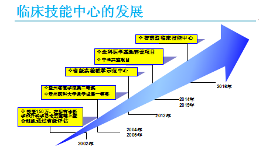
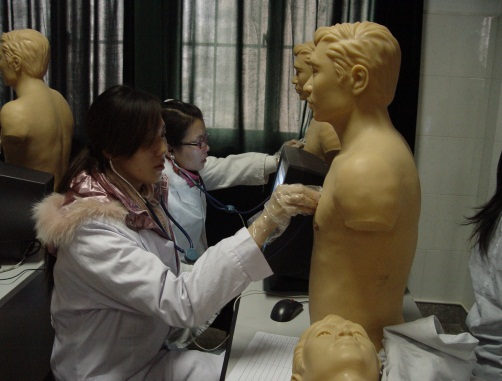
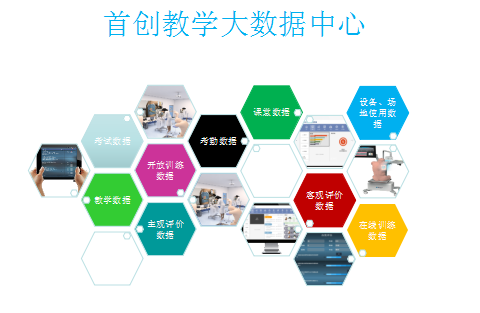
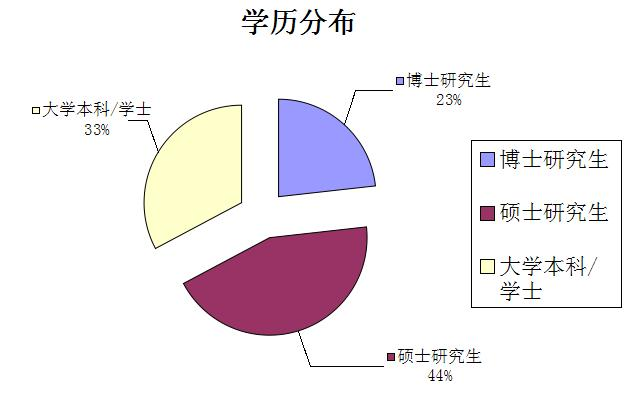
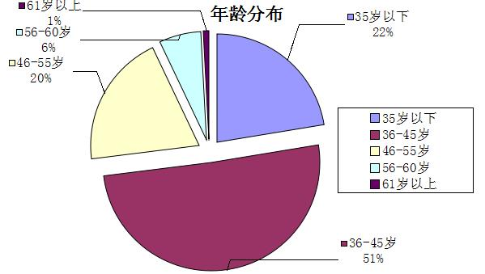
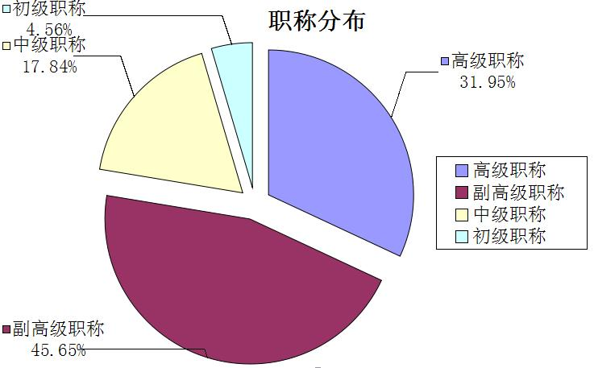
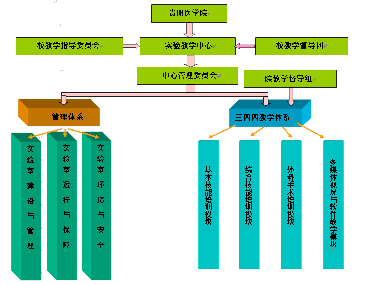
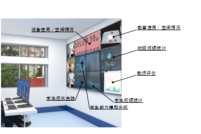

首页 < 中心介绍
- 中心概况
- 实验教学
- 师资队伍
- 管理模式
- 发展规划
中心概况
临床医学是一门实践性很强的学科，临床实践是培养医学生必不可少的手段。为提高学生的实践能力，缓解临床教学资源的相对不足和医疗法律法规限制给临床实践教学带来的困难，2002年学校投资150万元，在原外科学基础和内科诊断学实验室的基础上建立了临床医学技能实验中心，同年通过了省教育厅的评估。由于中心的创建与运行在临床实践教学中发挥了巨大作用，2004年获贵州医科大学教学成果一等奖，2005年获贵州省教学成果二等奖。
2007年和2008年学校获中央与地方共建高校项目资金资助，对中心进行了改扩建和模型设备的购置更新，教学环境和办学条件得到了显著改善。中心拥有国内较先进、省内领先的各种医学模型设备和多媒体网络教学及监控系统，使临床模拟实践教学以高科技为依托，模拟临床情景;以实践教学、情景教学、个体化教学为特征；以有医疗环境而无医疗风险为突出特点，顺应了国际医学教学改革的潮流，在临床医学教学中发挥了重要作用，缓解了临床实践基地不足及医疗环境造成的实践教学薄弱的困难，收到了良好的教学效果，2012年获“十二五”贵州省实验教学示范中心。
2014、2015年，新校区搬迁、老校区调整，学校将原解剖楼和基础1号楼5、6层划归临床技能实验中心作为实验教学用房。本着资源共享，最大合理化应用的理念，贵州医科大学附属医院将全科医生规范化培养基地技能培训中心与临床技能中心合二为一，并对中心进行了再次改扩建。改扩建后的临床技能中心实验教学面积由1960平方米扩大到了4009平方米，实践教学条件得到了进一步的改善和提高。同时借助全科医生基地建设项目、中央与地方共建高校项目及大健康建设项目资金（共计1600万元）对中心模型设备进行再次更新换代，完善生理驱动模拟教学系统建设；创建虚拟教学培训系统，包括心血管介入技术虚拟训练系统、静脉穿刺虚拟训练系统、综合穿刺虚拟训练系统、临床思维训练与测评体系（ DxR Clinician ）等；拓展中心服务范围，增设眼科学、耳鼻喉科学、中医学、针灸学、康复医学、重症医学相关技能培训项目。中心模型设备购置更新完成后，总价值将达2721.13万元，2045台件；实验教学项目将由目前的84项增加到100余项，覆盖的临床课程将由8门增加到14门。
2016年，为适应现代信息技术的发展，在招生规模较大的情况下保证教学质量，学校多方筹措资金，在老校区图书馆规划建设新技能中心，一期已投入八千六百多万元，即将竣工并投入使用，还有随后的二、三期建设，预计总投资达1.5亿元。新建临床技能中心总面积达13000m2，将是国内最大规模的临床技能中心，并以“智慧医学教育”为其最大特点，首创国内医学教育教学大数据及其应用、医学教育研发中心、国内最大的智能化OSCE考场等，这将对我校医学教育的发展带来巨大变革。
实验教学
临床技能是医学生知识和能力培养的重要组成部分，临床技能实验教学是学生练习临床技能的重要手段。中心探索性地实施“三四四”特色实验教学体系，即抓三基（基本理论、基本知识、基本技能）、推四新（新体系、新内容、新方法、新手段）、促四能（学习能力、实践能力、拓展创新能力、交流合作能力），并按“四模块”实验教学模式设置实验课程，即以基本技能培训模块、综合技能培训模块、外科手术技能培训模块、多媒体视屏与软件教学模块四个层次开展实验教学，不断提高实验教学水平，开阔学生思路和知识视野、提高综合素质和能力。
中心主要为临床内、外、妇、儿、重症医学、急救医学等教研室提供模拟仿真临床实践训练平台，每年完成临床医学、口腔医学、麻醉医学、医学影像学、预防医学、检验学、法医学等18个专业（方向）的诊断学、内科学、外科总论及外科学、儿科学、妇产科学、急救医学、临床基本技能课程的大量实验教学任务。每年培训学生3000人左右，共计18000多学时/年，360000人时次/年；协助开展本科生、研究生临床技能强化培训9520人时次/年。在满足本、专科生、研究生教学的同时，还承担了一定数量的执业医师技能培训、住院医师规范化培训、全科医师技能培训考核、乡村助产士培训等任务，提高了中心资源利用率，扩大了学校的社会影响，起到了较好的辐射作用，为提高医护人员的基本素质，改善我省的医疗条件作出了贡献。
新临床技能中心投入使用后，我们将大力推广“智慧医学教育”，采用技能训练学习新方法，增加学生训练机会，可望解决规模与质量的矛盾问题。利用技术手段强化学生自主学习、互助学习，一方面建立在线技能自主训练平台，学生可以通过网络随时随地进行相关技能的在线模拟训练，另一方面开放实验室让学生有充分动手训练的机会。借助大数据中心收集教学全过程相关基础数据，构建临床技能形成性评价体系，并通过分析、校验、优化、总结教学大数据不断改进教学。智能化的技能考场全智能调度、管理考试全过程，为我校全面推广OSCE创造了有力条件。

师资队伍
中心高度重视实验教学队伍建设，坚持“以人为本”的理念，遵循实验与理论教学队伍互通、核心骨干相对稳定的原则，促进教师硕士、博士化，提高教师学历/职称水平，建立了一支年龄结构、学历层次及学科配置合理的高素质实验教学队伍。中心目前拥有教师241人，高级职称以上的教师占59%，44%的教师拥有硕士以上学位。中心主要教师有丰富的科学研究和教改研究经历,主要成员中有全国优秀教师、全国优秀教育工作者、贵州省“五一”奖章获得者、贵州省优秀青年科技人才等。
  管理模式
中心实行校、院二级管理及中心主任负责制，根据教学任务书,配合实验课规划,管理和安排教学。中心拥有完善的仪器设备管理制度和具体措施，模型设备完好率95%以上，使用率90%；先进的智能化实验室管理系统和安全制度，保证了实验教学的顺利进行。
 发展规划
遵循高等教育规律，适应现代高等教育的发展趋势，秉承“诚于己，忠于群，敬往思来”的校训精神，以培养具有创新精神和实践能力的高素质临床医学人才为宗旨，临床技能中心将进一步提高建设水平和管理水平；培养建设相对专职的管理队伍和师资队伍；进一步优化完善实验教学模式和体系，深化教学改革；提高中心资源利用率，扩大服务范围和开放力度；努力将实验中心建设成为学生自主学习和独立探索创新、知识-能力-素质全面协调发展的现代化的实验教学平台，在全省临床实验教学领域处于领先地位，在西部地区乃至全国处于先进地位，并发挥其示范作用，向国家级实验教学示范中心迈进。